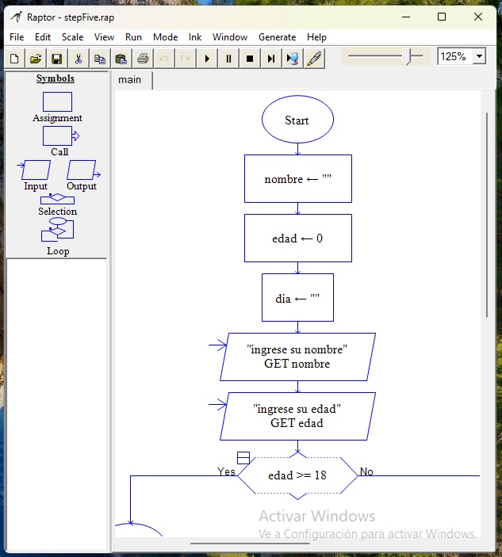
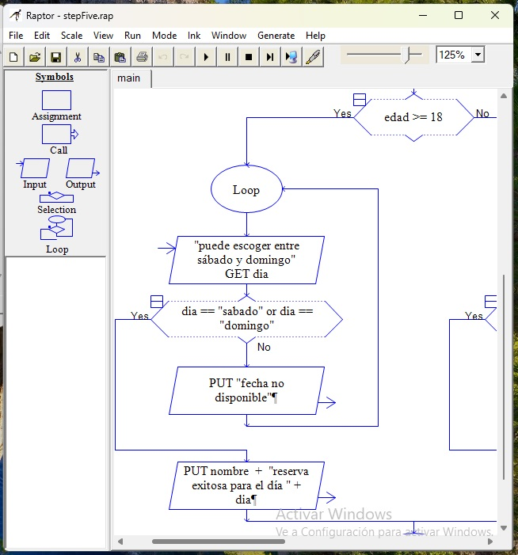
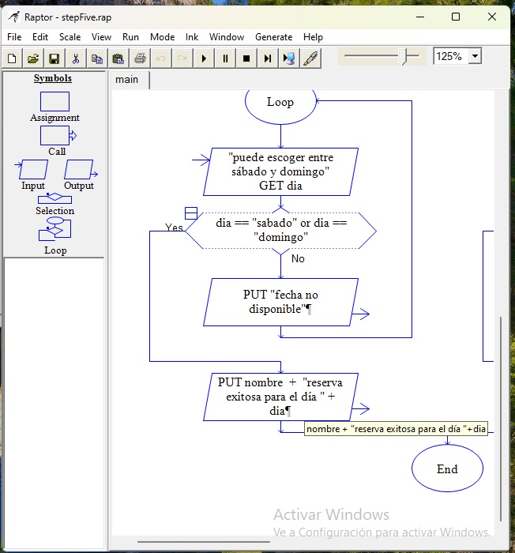
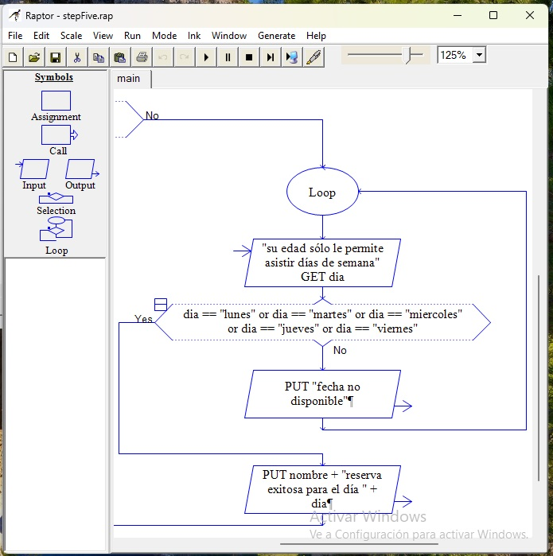

Construyendo otro programa.
Vamos a construir esta vez un filtro para eventos, en el que los menores de edad sólo puedan asistir los días de semana y los mayores puedan sólo los fines de semana.
Crearemos un nuevo proyecto en Raptor, le llamamos "portero". Vamos al panel de los símbolos y escogemos "assignment" y creamos tres variables: "nombre", "edad" y "día".
Día será de tipo numérico y las restantes serán de tipo string. Crearemos dos "input" para que el usuario introduzca sus datos. Agregamos también un símbolo "selection" y en el rombo establecemos la condición, que será edad es mayor o igual a 18 (recuerden que si declaramos que edad es mayor a 18, no se incluirá este valor).
Ahora, en cada rama agregaremos un símbolo "loop" que serán los programas que se ejecuten dependiendo de la edad del usuario (o la que dice tener).
dentro del bucle de la rama "yes" vamos a agregar un "input" que pregunte al usuario qué día desea asistir al evento, pero sólo podrá elegir entre sábado y domingo. Luego, en el rombo dentro del bucle establecemos la condición con un operador "OR". Luego, sólo el mensaje de reserva exitosa concatenada con las variables correspondientes.
para la rama "no" agregaremos únicamente un "output" con un mensaje de error para cuando el día escrito no esté dentro de las opciones.
del otro lado, haremos un proceso similar, colocando los días correspondientes. les dejo imágenes descriptivas del paso a paso.



